<!doctype html>
<html lang="id"><head><meta charset="utf-8"><title>Adegan 0: Pembuka</title>
<link rel="stylesheet" href="lib/overlay.css">
<style>
  .hero { position: absolute; left: 0; right: 0; top: 330px; text-align: center; opacity: 0; }
  .hero img { height: 230px; filter: drop-shadow(0 6px 24px rgba(0,0,0,.45)); }
  .hero .tt { font-size: 64px; font-weight: 800; letter-spacing: -1px; margin-top: 26px; text-shadow: 0 4px 24px rgba(0,0,0,.5); }
  .hero .k { font-size: 22px; font-weight: 700; letter-spacing: 8px; color: #d8eeff; margin-top: 10px; text-shadow: 0 2px 12px rgba(0,0,0,.5); }
</style></head>
<body><div id="stage"></div>
<script>window.ready = new Promise((r) => (window._ready = r));</script>
<script type="importmap">{ "imports": { "three": "./node_modules/three/build/three.module.js", "three/addons/": "./node_modules/three/examples/jsm/" } }</script>
<script type="module">
import * as THREE from 'three';
import { buatDunia, langit, laut, kamera } from './lib/dunia.js';
import { siapkanAdegan, el, perbarui } from './lib/overlay.js';
import { prog, easeOut, easeInOut } from './lib/common.js';
import { rng } from './lib/tekstur.js';

const A = await siapkanAdegan(0);
const D = A.durasi;
const { scene, cam, pmrem, render } = buatDunia({ ao: false, bloom: 0.12, exposure: 0.9 });
const sk = langit(scene, pmrem, { elev: 13, az: 152, top: '#14488f', mid: '#5c9ad6', hor: '#d6e6f2', sunCol: '#ffe6c0', glow: 0.25 });
scene.environment = sk.env;
scene.fog = new THREE.Fog('#cfe0ee', 500, 2600);
const sea = laut(scene, { y: 0, color: '#1a5688', rep: 220 });
scene.add(new THREE.HemisphereLight('#dfefff', '#204060', 0.6));
const sun = new THREE.DirectionalLight('#ffe7c4', 2.5); sun.position.copy(sk.sunDir).multiplyScalar(100); scene.add(sun);

// Pulau-pulau di kejauhan: bukit acak berwarna hijau kebiruan, memudar oleh kabut
const r = rng(21);
const hillMat = new THREE.MeshStandardMaterial({ color: '#2b4f45', roughness: 0.95 });
for (let i = 0; i < 9; i++) {
  const g = new THREE.SphereGeometry(1, 24, 10, 0, Math.PI * 2, 0, Math.PI / 2);
  const p = g.attributes.position;
  for (let k = 0; k < p.count; k++) { const y = p.getY(k); const ang = Math.atan2(p.getZ(k), p.getX(k)); p.setY(k, y * (0.85 + 0.15 * Math.sin(ang * 3 + i) + 0.08 * Math.sin(ang * 7 + i * 2))); }
  g.computeVertexNormals();
  const m = new THREE.Mesh(g, hillMat);
  const x = -900 + i * 230 + r() * 120, z = -1100 - r() * 300;
  m.position.set(x, -2, z); m.scale.set(120 + r() * 160, 30 + r() * 60, 80 + r() * 60);
  scene.add(m);
}

const camAt = kamera(cam, [
  { t: 0, p: [0, 3.2, 40], l: [0, 2.2, -100], f: 42 },
  { t: D * 0.55, p: [0, 5.5, -40], l: [0, 6, -200], f: 42, ease: 'lin' },
  { t: D, p: [0, 16, -95], l: [0, 10, -400], f: 44 },
]);

const hero = el(`<div class="tt">Air Bersih dari Laut</div><div class="k">SEAWATER REVERSE OSMOSIS · CONTAINERIZED</div>`, 'hero');
const vg = el('', 'shade'); vg.style.background = 'radial-gradient(ellipse 900px 420px at 50% 42%, rgba(4,16,36,.72), rgba(4,16,36,.3) 60%, transparent 85%)';
const fade = el('', 'shade'); fade.style.background = '#000';

window.renderFrame = (t) => {
  camAt(t);
  sea.update(t * 2);
  render();
  fade.style.opacity = 1 - easeOut(prog(t, 0, 1.2));
  const a = easeOut(prog(t, A.pre + 9.6, 1.0)) * (1 - prog(t, D - 0.6, 0.6));
  hero.style.opacity = a; vg.style.opacity = a; hero.style.transform = `translateY(${(1 - a) * 24}px) scale(${0.96 + 0.04 * a})`;
  perbarui(t);
};
window._ready();
</script></body></html>
